Deep Dive
Deep dive into focus

- Native GNOME App
- Submerge Mode
- Stats Dashboard
- Mini Widget
- Beautiful Heatmaps
- GTK4 + Libadwaita
- No Distractions
- Native GNOME App
- Submerge Mode
- Stats Dashboard
- Mini Widget
- Beautiful Heatmaps
- GTK4 + Libadwaita
- No Distractions
Features
Pomodoro
Classic 25-minute focus sprints seamlessly integrated into your desktop. Track projects and organize your day.

Timer
A beautiful, unobtrusive stopwatch that tracks time infinitely. Save your sessions and maintain your workflow without pressure.

Submerge Mode
Enter deep focus. Submerge blocks distracting elements to help you maintain concentration.

Project Stats
Visualize your focus. Track your daily deep work metrics automatically with beautiful, privacy-respecting local heatmaps.

Mini Mode
A distraction-free, floating widget that keeps your current timer visible without taking up valuable screen space.

Get Involved
Deep Dive is completely open-source. Our software has no restrictions on use and respects your privacy. Learn how to get involved:
Please review our Code of Conduct before contributing. See other ways you can join to make Deep Dive better.

Support Us
Deep Dive is developed and maintained by a single student. If it brings value to your daily workflow, please consider sponsoring to support its future development!
Donate